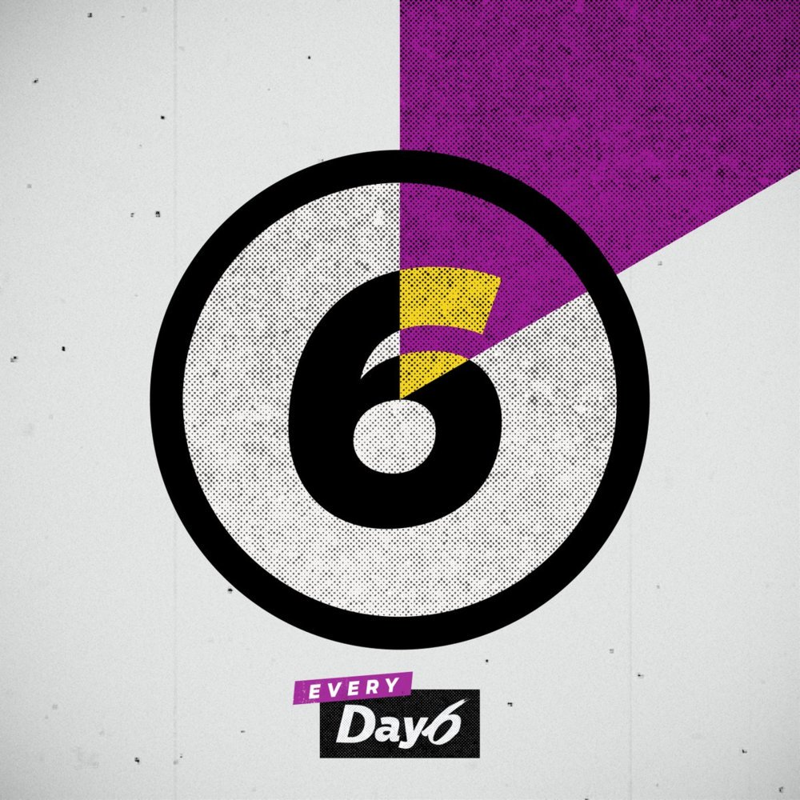

Day 6

지금 이 말이 우리가 다시
시작하자는 건 아냐
그저 너의 남아있던 기억들이
떠올랐을 뿐이야
정말 하루도 빠짐없이 너는
사랑한다 말해줬었지
잠들기 전에 또 눈 뜨자마자 말해주던 너
생각이 나 말해보는 거야
예뻤어
날 바라봐 주던 그 눈빛
날 불러주던 그 목소리
다 다 그 모든 게 내겐
예뻤어
더 바랄게 없는듯한 느낌
오직 너만이 주던 순간들
다 다 지났지만
넌 너무 예뻤어
너도 이제는
나와의 기억이
추억이 되었을 거야
너에게는 어떤 말을 해도 다
지나간 일일 거야
정말 한번도 빠짐없이 너는
나를 먼저 생각해줬어
아무 일 아니어도 미안해 고마워 해주던 너
생각이 나 말해보는 거야
예뻤어
날 바라봐 주던 그 눈빛
날 불러주던 그 목소리
다 다 그 모든 게 내겐
예뻤어
더 바랄게 없는듯한 느낌
오직 너만이 주던 순간들
다 다 지났지만
넌 너무 예뻤어
아직도 가끔 네 생각이 나
어렵게 전화를 걸어볼까
생각이 들 때도 많지만
Baby, I know it’s already over
아무리 원해도 너는 이제
이미 끝나버린 지난 날의
한편의 영화였었단 걸 난 알아
마지막 날 바라봐 주던 그 눈빛
잘 지내라던 그 목소리
다 다 그마저도 내겐
예뻤어
내게 보여준 눈물까지
너와 가졌던 순간들은
다 다 지났지만
넌 너무 예뻤어